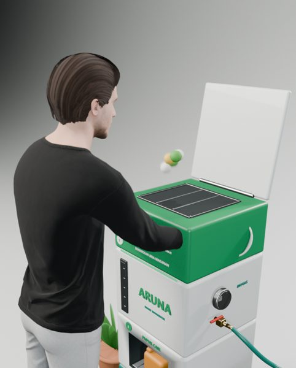
Masukkan
Buka tutup, tuang sisa makanan. Berat dicatat otomatis.
ARUNA mencerna sisa makanan rumah tangga tanpa oksigen menjadi biogas untuk memasak, pupuk cair, dan kompos. Sensor dan aplikasi menjaga prosesnya tetap aman — kamu cukup mengisi dan memanen.
44 × 44 × 112 cm · 1,5 kg sisa makanan/hari · muat di pojok dapur
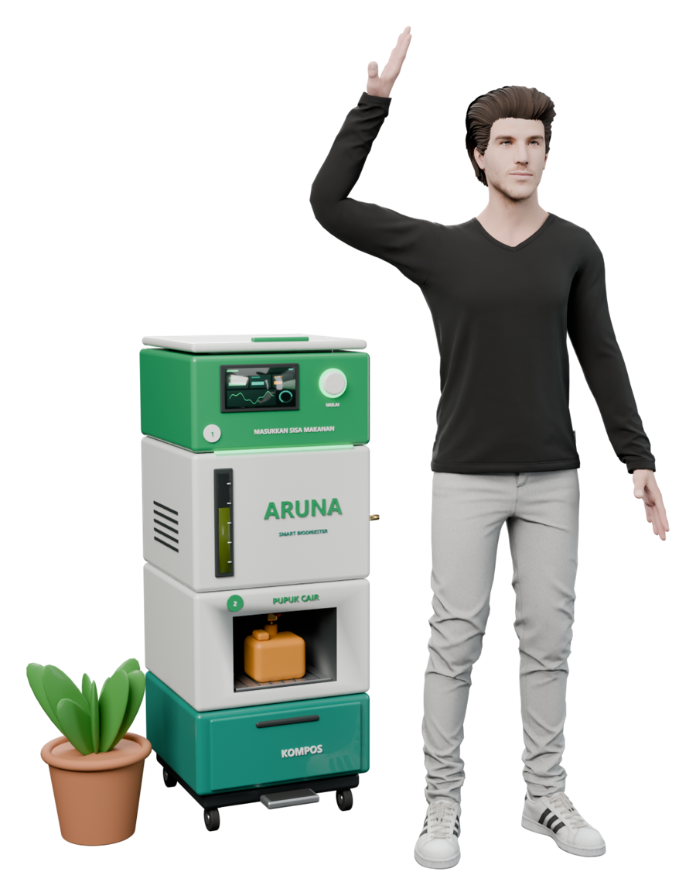
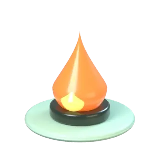
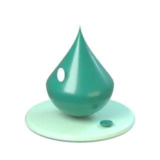
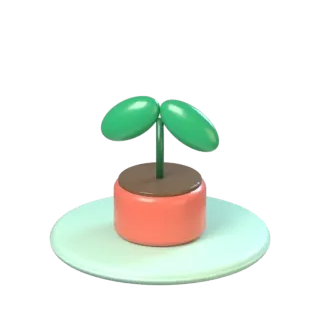
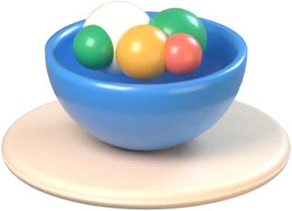
53 kgsisa makanan per orang per tahun di rumah tangga IndonesiaUNEP 2024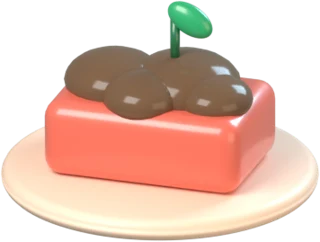
14,7 Mtsisa makanan rumah tangga per tahunUNEP 2024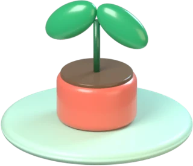
≈ 40 %sampah kota berupa sisa makananSIPSN KLHK 2023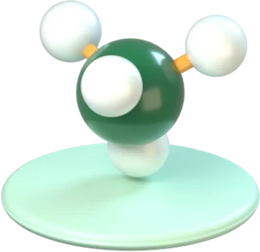
1,7 GtCO₂e dari susut & sisa pangan 2000–2019Bappenas 2021Alur gravitasi dari atas ke bawah: masukkan di atas, panen di bawah. Mesin mengurus sisanya.

Buka tutup, tuang sisa makanan. Berat dicatat otomatis.
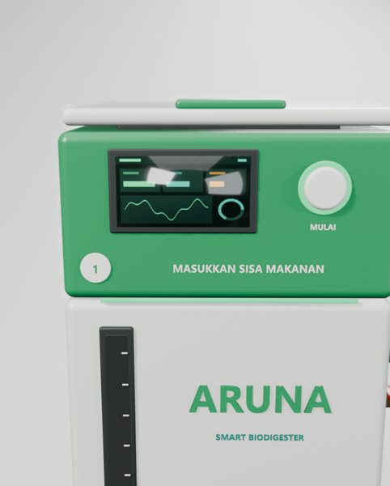
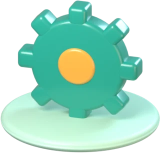
Dicacah, diaduk, dicerna bakteri ±34 hari pada 30–38 °C.
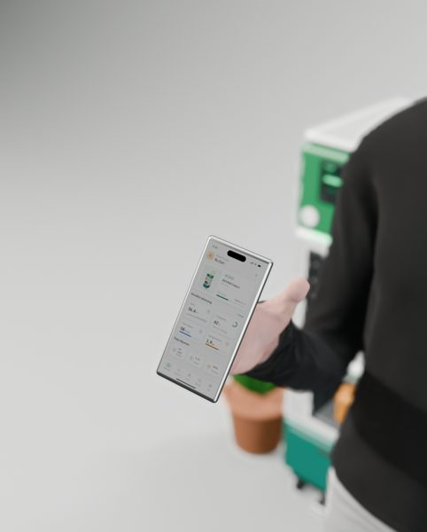
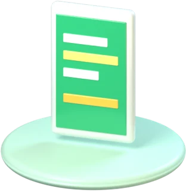
Status, grafik, dan notifikasi panen langsung di HP.
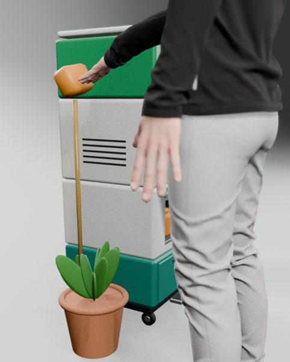
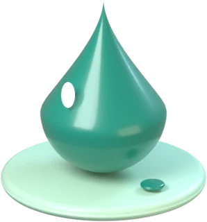
Ambil pupuk cair dari keran, encerkan 1 : 10.
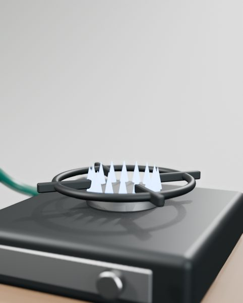
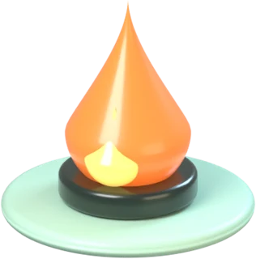
Biogas mengalir ke kompor — api biru tanpa LPG.
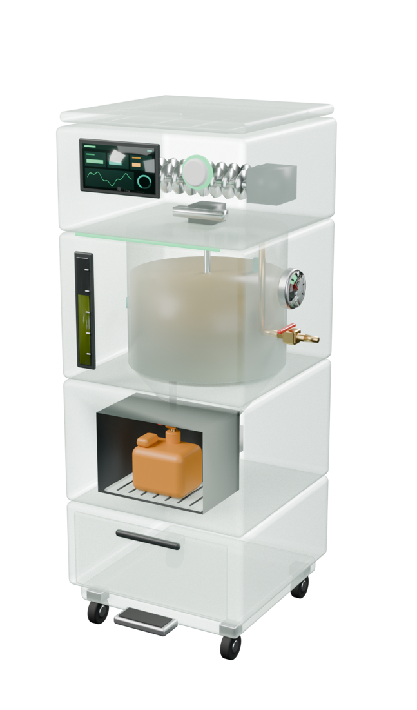
Volume 100 L dan waktu tinggal ±34 hari dihitung dari neraca massa dan model Gompertz. Lima sensor dan aturan pengaman otomatis menjaga pencernaan tetap stabil.
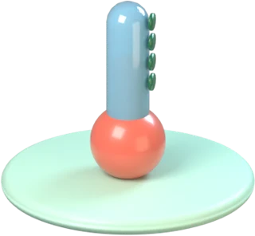
SuhuDS18B20 · ±0,5 °CPrediksi perhitungan desain (belum hasil ukur) — dipakai sebagai target uji laboratorium dan lapangan.
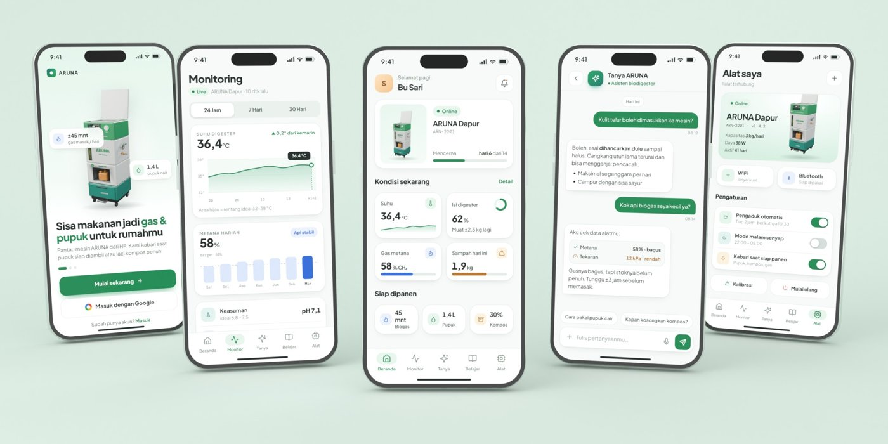